Suplementos Alimentares
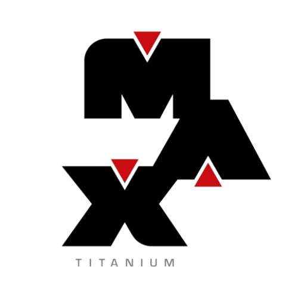
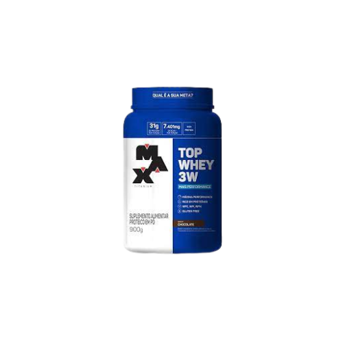
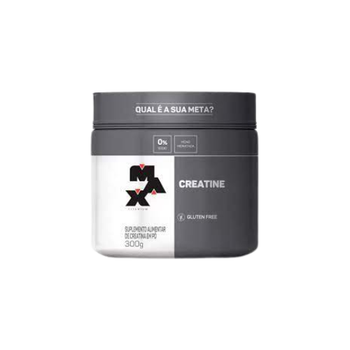
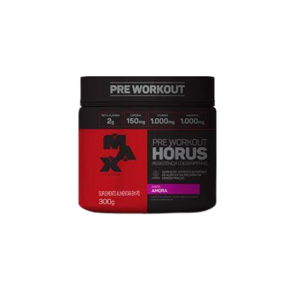
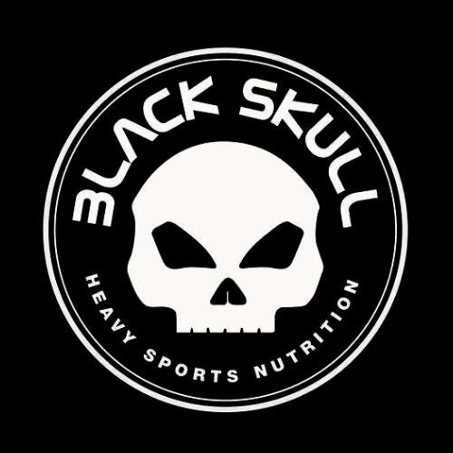
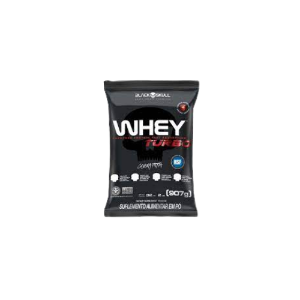
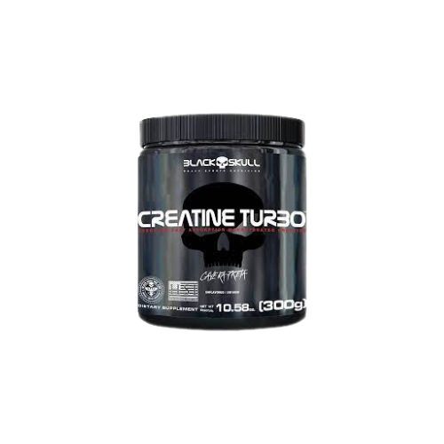
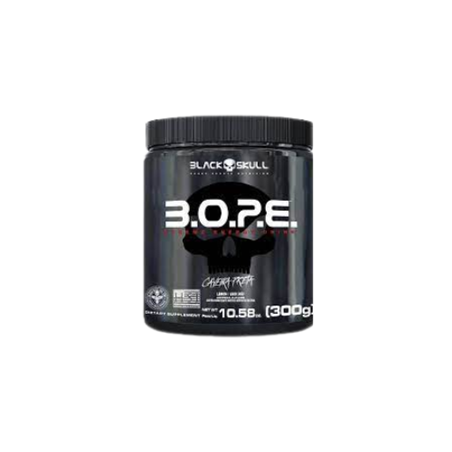
 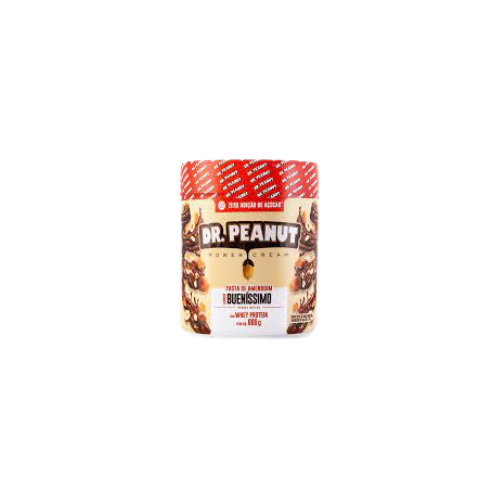
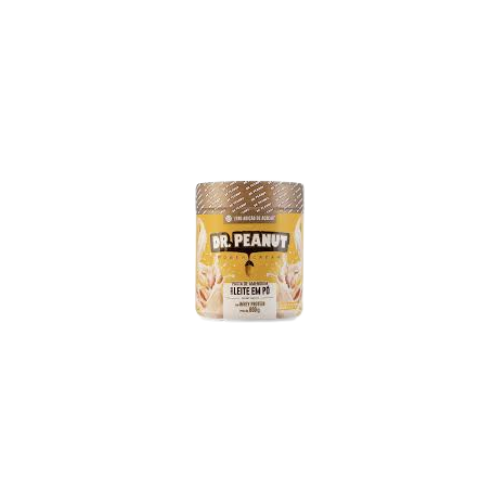
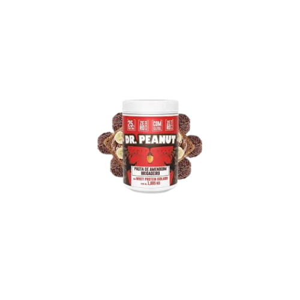
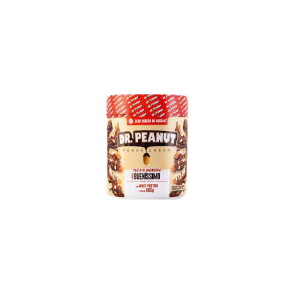
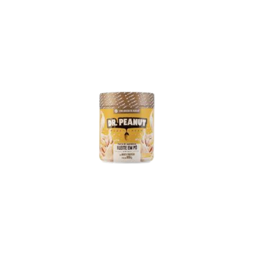
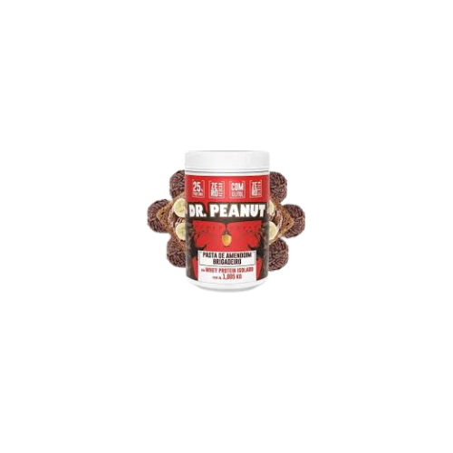
Em nossa academia, a organização é uma das principais exigencias, prezamos pelo melhor serviço, com muita qualidade, conforto e segurança para o cliente, justamente por isso, separamos as maquinas por seus respectivos grupos musculares.
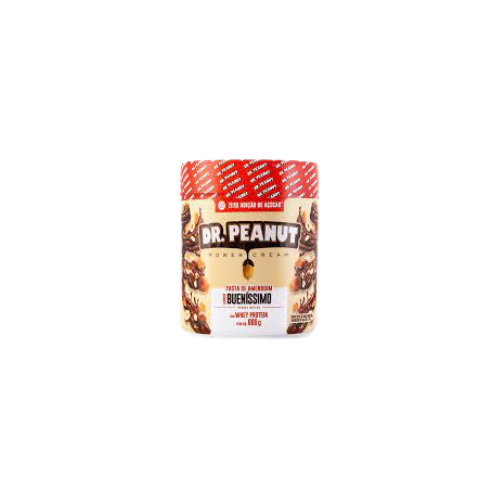
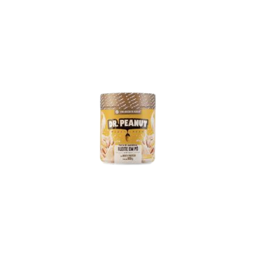
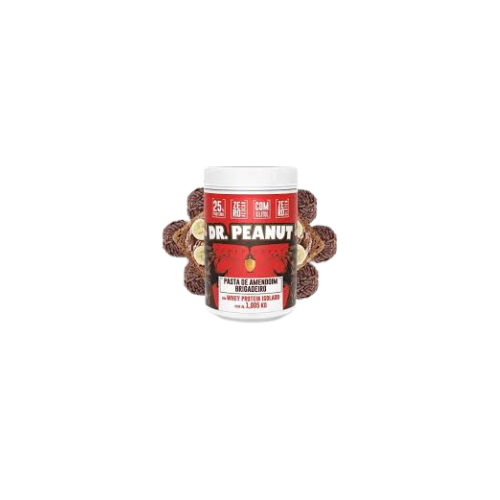